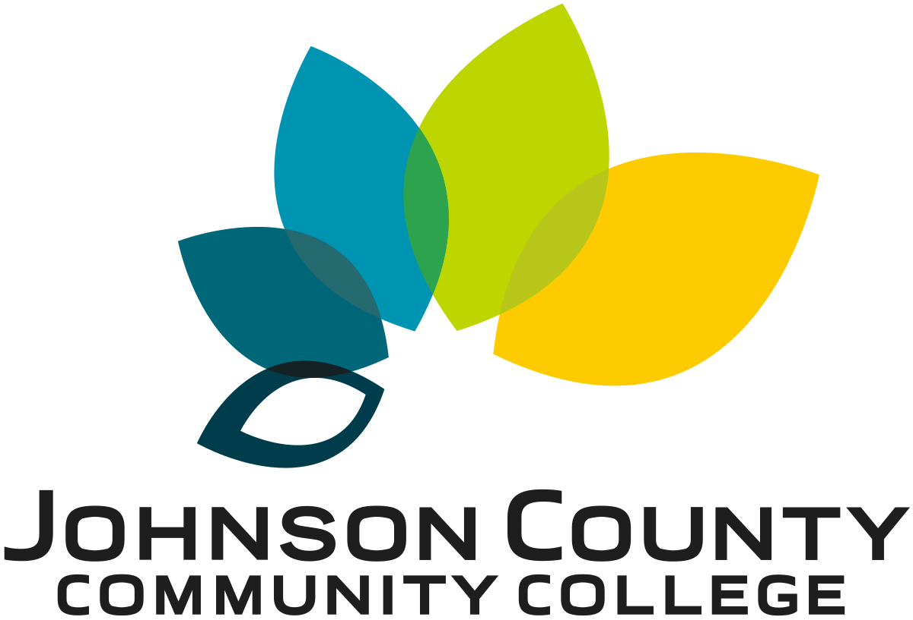

Education
- Associate of Applied Science in Information Technology – Johnson County Community College, Overland Park, KS
- Bachelor of Science in Information Technology (Expected Spring 2026) – University of Kansas, Overland Park, KS
Certifications & Achievements:
- General Music (Violin Emphasis) – Regional Institute of Music Training, Batna, Algeria
- Electrical Engineering – Technical Institute, Algeria
- Media and Communication – University of Batna, Batna, Algeria
Experience
- Owner/Manager, Wi-Fi Café (2004–2011)
- Senior Electrical Engineer, SONELGAZ, Algeria (2012–2019)

Technical Skills
- Front-End Development: HTML, CSS, JavaScript
- Back-End Development: PHP, MySQL, Python
- System Administration: Linux, Apache, Docker
- Networking & Security Tools: Wireshark, SSH
- Languages: Fluent in Arabic, French, and English
- Musical proficiency: piano and violin
- Project Management & Team Leadership
- knowledge of electrical engineering principles and practices
